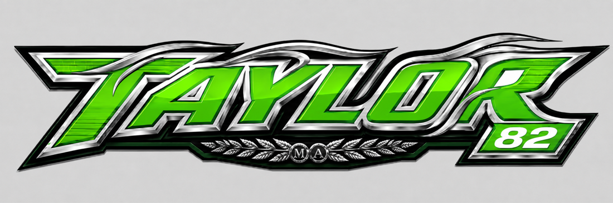
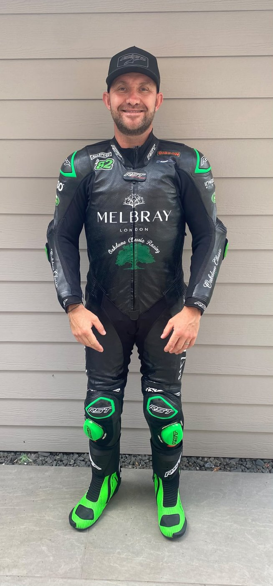
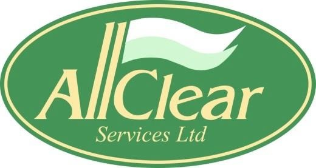
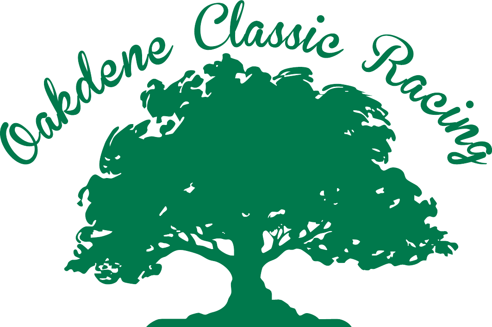
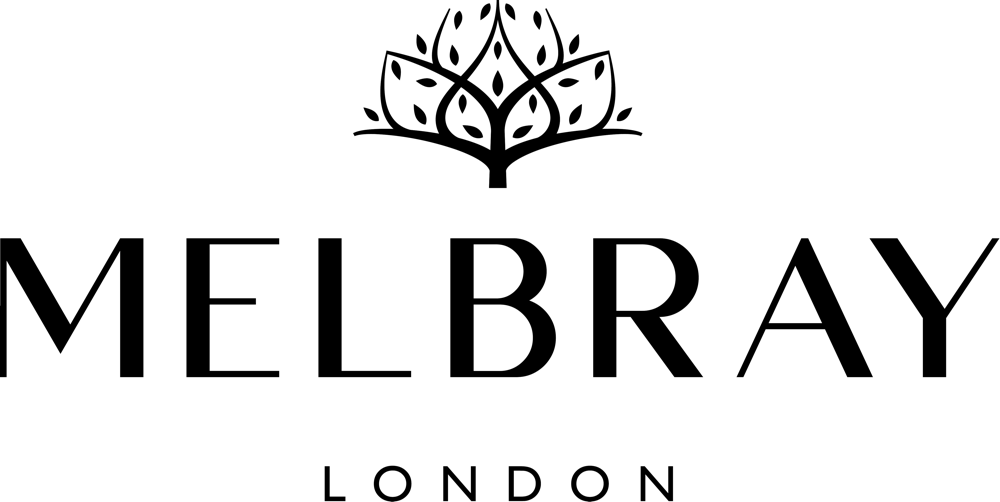
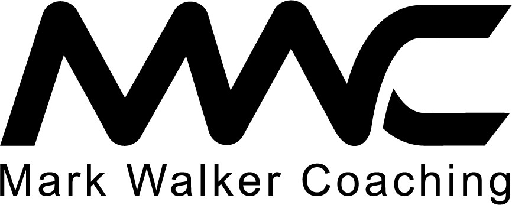
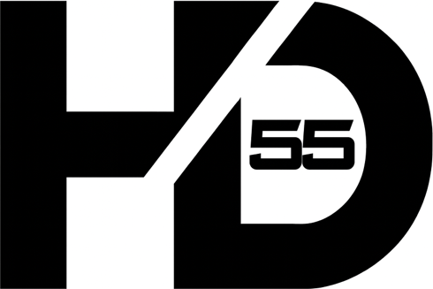
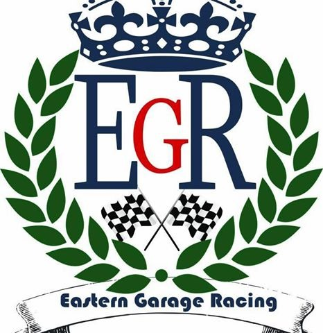

- British Lansdowne Classic Champion
- John Preece Trophy – most fastest laps of the season
Motorcycle Racer • Race Number 82
Mark Taylor
Ten-time club championship winner, stepping into the British Superbike platform, competing in the 2027 BMW F900 Cup.

About the rider

Mark Taylor is a motorcycle racer from Ashingdon, Essex, with a strong club racing record and a clear target: to break into national level British Superbike racing as number 82.
Mark is known for his Kawasaki green identity, club and classic racing influence, and recent experience and success racing Norton classic motorcycles for Oakdene Classic Racing.
Racing record
Achievements by year
- British Lansdowne Classic Champion
- John Preece Trophy – most fastest laps of the season
- Goodwood Revival podium finish
- 3rd in the British Lansdowne Championship, winning the last 8 championship races consecutively
- John Preece Trophy – most fastest laps of the season
- Classic Production 600 Champion
- PC750 Race of the Year winner
- British MZ Racing Champion
- Bemsee/BMCRC Rider of the Year
- Bemsee/BMCRC Blue Haze Champion
- Two Stroke GP Champion
- Yamaha Past Masters Champion
- Bemsee/BMCRC top solo performer
- British MZ Racing Champion
- British MZ Racing Champion
- Invited to be an official ACU instructor
- British MZ Racing Champion
2027 season
Calendar
2027 ZYN British Superbike / BMW F 900 R Cup Calendar
| Round | Date | Venue |
|---|---|---|
| Official Test | 3–4 April 2027 | Donington Park GP |
| Official Test | 21–22 April 2027 | Oulton Park International |
| 1 | 1–3 May 2027 | Oulton Park |
| 2 | 21–23 May 2027 | Donington Park GP |
| 3 | 18–20 June 2027 | Knockhill |
| 4 | 2–4 July 2027 | Snetterton |
| 5 | 16–18 July 2027 | Brands Hatch GP |
| 6 | 30 July–1 August 2027 | Oulton Park |
| 7 | 6–8 August 2027 | Thruxton |
| 8 | 28–30 August 2027 | Cadwell Park |
| 9 | 17–19 September 2027 | TBC / Final Rounds TBA |
Partners
Sponsors
Proudly supported by these partners.

All Clear Services Ltd Asbestos removal specialists based in Darlaston, West Midlands, providing removal, management and disposal services to commercial, domestic and industrial clients.
Oakdene Classic Racing The classic racing team Mark rides for, campaigning Norton classic motorcycles.
Melbray London Proud supporter of Mark Taylor Racing #82.
Mark Walker Coaching Experienced coach known for personalised training programmes, with a track record in cycling and motorcycle coaching.
Dessoy Racing Harrison Dessoy competes in World Sportbike as number 55 and is a professional web designer, building modern, high-quality websites.
Eastern Garage Racing Essex garage in Finchingfield offering servicing, MOTs, repairs, car body work and tyres.Get in touch
Contact Mark Taylor #82
For sponsorship, racing enquiries, media, or event opportunities, use the contact links below.